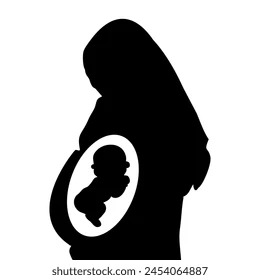
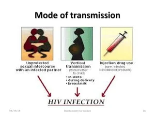

HIV is spread by three main routes: sexual contact, significant exposure to infected body fluids or tissues, and from mother to child during pregnancy, delivery, or breastfeeding (known as vertical transmission). There is no risk of acquiring HIV if exposed to feces, nasal secretions, saliva, sputum, sweat, tears, urine, or vomit unless these are contaminated with blood. It is also possible to be co-infected by more than one strain of HIV—a condition known as HIV superinfection..The three possible ways of transmission are as follows
HIV is mainly transmitted through sexual contact, with heterosexual relationships being the most common globally. In the U.S., most new diagnoses occur among men who have sex with men, particularly young gay and bisexual men.
Key points include:
Undetectable = Untransmittable:** Individuals on effective antiretroviral therapy with an undetectable viral load cannot sexually transmit HIV.
Transmission Risk:** Higher in low-income countries; for example, female-to-male transmission is 0.38% compared to 0.04% in high-income countries. Anal sex has the highest risk (1.4–1.7%).
Influencing Factors:** The presence of other STIs and genital ulcers increases transmission risk significantly. Acute HIV infection raises infectiousness twelvefold.
Higher Risk Groups:** Commercial sex workers and victims of sexual assault face increased risks due to lack of protection and potential physical trauma.
The second-most common mode of HIV transmission is through blood and blood products, which can occur via:
Needle-Sharing: The risk of acquiring HIV through sharing needles during intravenous drug use is between 0.63% and 2.4% per act, averaging 0.8%. Needle-stick injuries carry a risk of 0.3%, and mucous membrane exposure has a risk of 0.09%, potentially increasing to 5% if blood from a high-viral-load person is involved.
Blood Transfusions: About 90% of HIV transmissions from transfusions involve contaminated blood. In developed countries, the risk is extremely low due to effective screening (e.g., 1 in 5 million in the UK). In low-income countries, inadequate screening may lead to 15% of HIV infections stemming from transfusions.
Unsafe Medical Practices: In sub-Saharan Africa, unsafe medical injections accounted for 12% to 17% of infections in 2007, with an estimated transmission risk of 1.2%. Risks are also associated with invasive medical procedures and dental care.
Tattoos and Piercings: While individuals giving or receiving tattoos and piercings may be at theoretical risk, no confirmed cases of transmission have been documented in this context.
Non-Transmission via Insects: Mosquitoes and other insects do not transmit HIV.
Overall, blood and blood product transmission, while less common than sexual transmission, remains a significant concern, particularly in regions with inadequate healthcare practices.

HIV can be transmitted from mother to child during pregnancy, during delivery, or through breast milk, resulting in the baby also contracting HIV. As of 2008, vertical transmission accounted for about 90% of cases of HIV in children.[85] In the absence of treatment, the risk of transmission before or during birth is around 20%, and in those who also breastfeed 35%. Treatment decreases this risk to less than 5%.
Antiretrovirals when taken by either the mother or the baby decrease the risk of transmission in those who do breastfeed. If blood contaminates food during pre-chewing it may pose a risk of transmission. If a woman is untreated, two years of breastfeeding results in an HIV/AIDS risk in her baby of about 17%. Due to the increased risk of death without breastfeeding in many areas in the developing world, the World Health Organization recommends either exclusive breastfeeding or the provision of safe formula. All women known to be HIV-positive should be taking lifelong antiretroviral therapy

Risk Factors
Behaviours and conditions that put people at greater risk of contracting HIV include:
having anal or vaginal sex without a condom
having another sexually transmitted infection (STI) such as syphilis, herpes, chlamydia, gonorrhoea and bacterial vaginosis
harmful use of alcohol or drugs in the context of sexual behaviour
sharing contaminated needles, syringes and other injecting equipment, or drug solutions when injecting drugs
receiving unsafe injections, blood transfusions, or tissue transplantation
medical procedures that involve unsterile cutting or piercing; or accidental needle stick injuries, including among health workers.